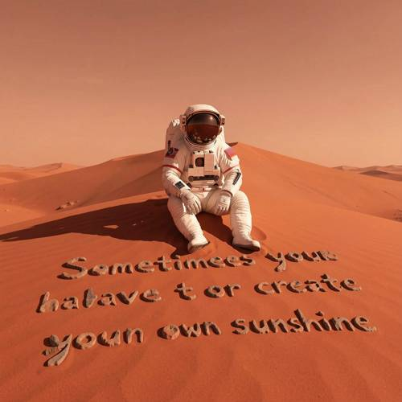
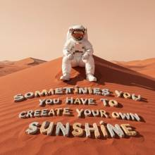
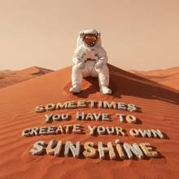
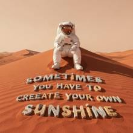
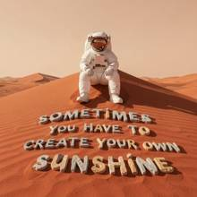

Text Generation — Please draw: A lonely astronaut sits on a red sand dune on Mars, spell
Please draw: A lonely astronaut sits on a red sand dune on Mars, spelling out the words "Sometimes you have to create your own sunshine" with stones on the sand in front of him

Direct — one call, no iterationContinuum — Kimi K3 + FLUX.2-klein-9B
Judge — Direct
FAILText Generation — The image displays text made from stones on the sand. The text reads 'Sometimess your haiave t or create youn own sunshine'. This is an incorrect rendering of the required phrase 'Sometimes you have to create your own sunshine'. There are multiple misspellings and incorrect words, such as 'Sometimess' instead of 'Sometimes', 'your' instead of 'you', 'haiave' instead of 'have', 't or' instead of 'to', and 'youn' instead of 'your'. Therefore, the text is not accurately generated.
Judge — Continuum
PASSText Generation — The image accurately displays the text 'SOMETIMES YOU HAVE TO CREATE YOUR OWN SUNSHINE' spelled out in capital letters made of stone on the sand. The text is complete, correctly spelled, and contains no omissions or extra words.
What the agent did
Thinking
We need generate image with flux2-klein fixed. Need inspect text carefully. Prompt has long phrase on sand in stones. This is likely hard. Need generate, inspect, verify via crops, edit text as necessary. We need no seed. Need perhaps dimensions unspecified likely 1024. We can generate with detailed prompt. Need only visual detail, no backstory. We should include astronaut composition, red dune, stones spelling exact phrase. Maybe 1024 square. Need ensure entire long phrase legible. Ask image. Could use generation prompt emphasizing typography and layout. Maybe text on ground in front, perspective. Need perhaps use white/light stones against red sand, letters large. Astronaut sits behind. Mars atmosphere. Let's generate.
Step 1 — `generate_image`
{
"model": "flux2-klein",
"width": 1024,
"height": 1024,
"prompt": "A cinematic square-format view of a lonely astronaut in a white spacesuit sitting quietly on the crest of a rippled red-orange Martian sand dune, knees bent and hands resting near a carefully arranged message. In the foreground sand, spread wide enough to remain readable, light gray and pale ochre stones are individually arranged as crisp block letters spelling exactly: \"Sometimes you have to create your own sunshine\". The words are laid out in multiple neat curved rows on the dune surface in front of the astronaut, with clear spacing between every word. Red Mars desert, distant dunes, thin dusty peach sky, soft sunlight casting long shadows, realistic stones with visible individual pebble shapes, sharp legible text, no other objects or text."
}
Result img_0

Thinking
Need inspect. Full view text seems wrong: first line "SOMMETIMES YOU"? Let's zoom. Need inspect each text region. User requested exact "Sometimes you have to create your own sunshine". Current image displays maybe "SOMMETIMES YOU", "YOU HAVE TO", "CREEATE YOUR OWN", "SUNSHINE". The initial top line looks "SOMMETIMES YOU" likely malformed. Need exact spelling and capitalization maybe uppercase stones acceptable? User gave words but likely quote can uppercase. Need inspect regions. Call 4 crops perhaps first lines. Use inspect_region rectangle normalized. Maybe top line y .56-.66, second .65-.72, third .71-.79, bottom .78-.92. Let's crop.
Text first line seems "SOMMETIMES YOU" maybe malformed M? Need read: It seems letters: S O M M E T I M E S? Let's count. Image crop starts perhaps SOMME? We need exact Sometimes = S o m e t i m e s. Current appears "SOMMETIMES"? Let's inspect left top.
Now clear top says SOMMETIMES? Sequence: S O M M E T I M E S maybe indeed double M? Let's map. Desired SOMETIMES has S O M E T I M E S (9 letters). Current appears S O M M E T I M E S? In crop, starting at x 66: S, x118 O, x177 M, x238 maybe M? x292 E, x349 T, x405 I, x455 M, x510 E, x580 S. Yes 10 letters and double M: SOMMETIMES. Need fix first word, remove extra M and rearrange? Could edit text only, targeted prompt naming incorrect and correct. Since full image text otherwise mostly good except first word. Need maybe phrase arrangement: current top line SOMMETIMES YOU, second YOU HAVE TO, third CREEATE YOUR OWN, fourth SUNSHINE. Exact words all present but Sometimes misspelled and extra "you" after first line leads phrase as "SOMMETIMES YOU YOU HAVE TO CREEATE YOUR OWN SUNSHINE" — Actually requested sentence starts "Sometimes you have to create your own sunshine." Current first row ends YOU, then second row starts YOU, duplicate. Need remove trailing YOU from top and fix SOMMETIMES to SOMETIMES. Other words: third line "CREEATE"? Crop shows C R E E A T E perhaps yes "CREEATE" with double E? Desired CREATE = C R E A T E (6). Current maybe C R E E A T E = 7. Looking crop, after R there are maybe two Es then A. It reads "CREEATE". Need fix. Also top duplicate YOU. Could targeted edit replace text region? Long text extremely hard but image currently close. We need exact. We can use edit_image with prompt "Change the stone lettering so it reads exactly ... fix first row..." This may affect entire region but hopefully. We need maybe use qwen? Policy says flux2-klein editing only. So yes. Need mark current maybe as best? It has errors, not submit if can avoid. But instructions mark as soon as willing; not willing yet. We can attempt edit. Maybe targeted instruction: "Correct only the stone text: remove theextra 'M' from SOMMETIMES so it reads SOMETIMES; remove the duplicate YOU at end of first line; correct CREEATE to CREATE. Keep..." However edit_image prompt should delta only, concrete. We can name incorrect and correct. It might handle. Need maybe preserve astronaut etc via prompt? Rule says delta only. "Correct the stone lettering..." No extra scene. Could say exact full sentence maybe not re-describe rest. Since text specifically, name incorrect/correct, don't re-describe scene. We can mention "Change the stones so the four lines read: SOMETIMES / YOU HAVE TO / CREATE YOUR OWN / SUNSHINE." This is exact change and no rest. Need first row currently has trailing YOU; perhaps making first line only Sometimes, second line You have to. This may require remove and shift. Could set rows. "Rearrange the stone lettering so the four rows read exactly..." That's a targeted text edit. Let's do.
Step 7 — `edit_image`
{
"model": "flux2-klein",
"image": "img_0",
"prompt": "Rearrange only the stone lettering into four rows reading exactly: \"SOMETIMES\" / \"YOU HAVE TO\" / \"CREATE YOUR OWN\" / \"SUNSHINE\". Correct \"SOMMETIMES\" to \"SOMETIMES\", remove the duplicate \"YOU\" after it, and correct \"CREEATE\" to \"CREATE\". Keep each letter formed from separate pale stones."
}
Result img_6

Thinking
It fixed duplicate You and likely first? Top now seems S O M E E T I M E S maybe "SOMEETIMES" with double E? Need inspect. Also create still "CREEATE". Edit improved duplicate. Need exact. Could maybe targeted inpainting text region better? We need spell corrections. Maybe use image editing or inpainting with precise mask and prompt contents. But text by generative model still tricky. Could potentially use image editing multiple times. Need inspect. Crop top and create.
Text top clearly "SOMEETIMES" (double E after M) maybe yes. Current full sentence: SOMEETIMES YOU HAVE TO CREEATE YOUR OWN SUNSHINE. Two spelling errors. Need correct. Could do targeted edit only these two words. "Change SOMEETIMES to SOMETIMES by removing one E. Change CREEATE to CREATE by removing extra E." This is concrete. Maybe edit_image. Use img_6.
Step 10 — `edit_image`
{
"model": "flux2-klein",
"image": "img_6",
"prompt": "Correct only two stone words: change \"SOMEETIMES\" to \"SOMETIMES\" by removing the extra E, and change \"CREEATE\" to \"CREATE\" by removing the extra E. Keep all other stone letters unchanged."
}
Result img_9
Thinking
Looks identical. Maybe edit failed. Need alternative. Inpainting specific word masks could regenerate entire word correctly. Need segmentation masks. We can mask first word and "CREATE" part. Inpaint prompt as contents of region. But Fill text-driven and text rendering may be imperfect. However isolated single word perhaps easier. We can use segment for text region? segment "the top row stone word" maybe mask all letters. Then inpaint with "pale stones arranged to spell SOMETIMES..." But mask shape will preserve silhouette of existing 10 letters, leading same extra letter unless dilate? We need remove extra E and shift letters. Mask all top word with dilation 10, prompt "the word SOMETIMES spelled with individual pale stones, nine letters..." Could produce correct. For create, mask only word "CREEATE" (left portion) and inpaint. But prompt "individual pale stones spelling CREATE" with six letters. Mask silhouette currently 7 letters; dilate and maybe redistribute. Could work. Need potentially separately. We can use segment text perhaps "the top row of pale stone letters" and "the stone word CREEATE" etc. But SAM may segment all letters. Could use segment_boxes around regions; boxes produce masks maybe stones only, good. Better use segment_boxes with box for top word and one for create. For top row rectangle x 0.14-0.85, y .55-.62; create x .05-.46, y .69-.77. Need segment boxes, perhaps masks merged if one call with two boxes, but we need separate inpaints maybe could inpaint both at once with prompt describing two words? Better separately. Could also use manual generated mask? No image creation/editing pixel tool except segment. We can segment boxes. Let's get top mask.
Mask good but silhouette. Use dilate maybe 12 to give room. Inpaint image img_6 mask img_10 prompt "the single word SOMETIMES spelled in large capital letters, each letter assembled from separate pale gray and beige stones lying on red Martian sand, with clear spaces..." Need contents only, no mention mask. Could produce nine letters. Steps default 50, guidance 30. Let's do.
Step 12 — `inpaint_image`
{
"image": "img_6",
"mask": "img_10",
"dilate": 14,
"prompt": "The word SOMETIMES spelled in nine large capital letters, each letter assembled from separate pale gray and beige stones resting on rippled red Martian sand, clear spacing between letters, natural long shadows, crisp readable typography."
}
Result img_11

Thinking
Great top now likely "SOMETIMES" exactly? Full view reads SOMETIMES. Need create still wrong. Inpaint create. Segment box on img_11.
{
"image": "img_11",
"mask": "img_12",
"dilate": 14,
"prompt": "The word CREATE spelled in six large capital letters, each letter assembled from separate pale gray and beige stones resting on rippled red Martian sand, clear spacing between letters, natural long shadows, crisp readable typography."
}
Result img_13

Thinking
Now looks exact. Need inspect all text via crops to verify letter by letter. Use inspect top, second, third, bottom.
Text exact. Need evaluate scene: astronaut sits on red sand dune on Mars, stones in front. Yes. Maybe astronaut's helmet reflects weird. Fine. Need mark_best img_13. Then final succinct. But must maybe no need further edit. Mark.
Step 19 — `mark_best`
{
"image": "img_13",
"reason": "The composition matches the prompt, and close inspection confirms the stone lettering reads exactly: \u201cSOMETIMES YOU HAVE TO CREATE YOUR OWN SUNSHINE.\u201d"
}
Model
Done — the astronaut scene is complete, with the stones clearly spelling: **“SOMETIMES YOU HAVE TO CREATE YOUR OWN SUNSHINE”**